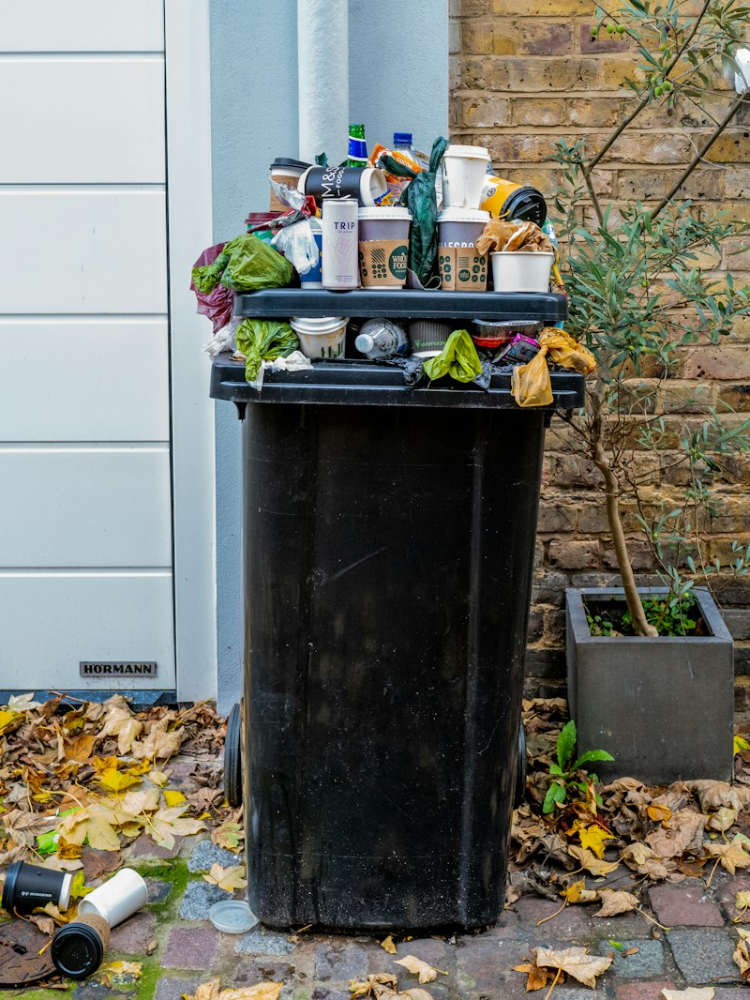
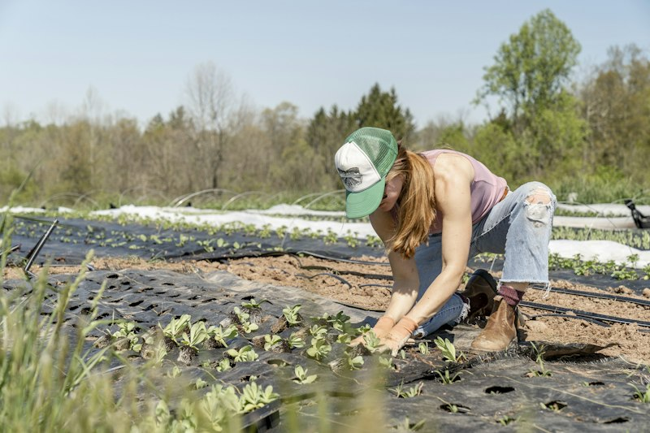
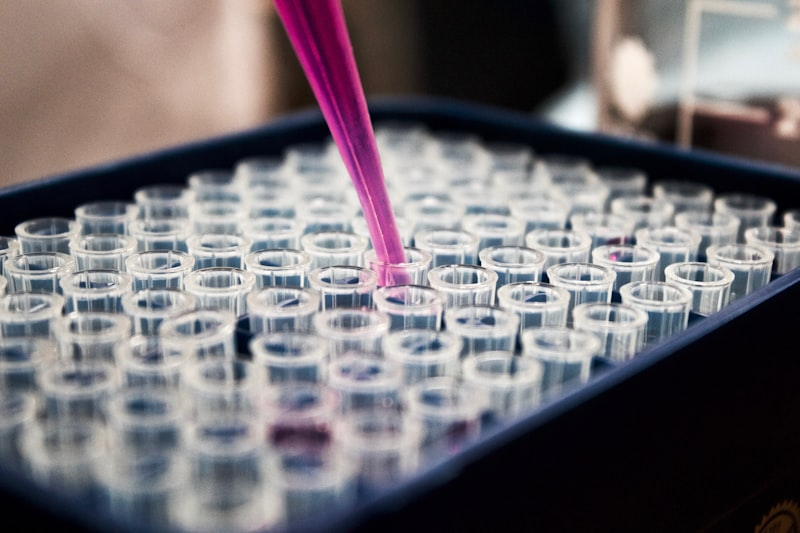

POLÍTICAS DE BIOECONOMÍA EN AMÉRICA LATINA
Transformación de recursos biológicos, biorrefinerías circulares, innovación y sostenibilidad en Costa Rica 🇨🇷, Brasil 🇧🇷 y Colombia 🇨🇴.
COSTA RICA
Descarbonización 2050Estrategia Nacional de Bioeconomía 2020-2030
Decreto Ejecutivo N° 42475 (MICITT, MAG, MINAE y MEIC).
Biomasa residual de rastrojo de piña y broza de café
Fibras lignocelulósicas agrícolas y cultivos de microalgas.
Bioplásticos compostables y biofertilizantes orgánicos
Aprovechamiento integral de pasivos agrícolas y bioinsumos.
Agroindustria circular, Biorrefinerías y Biomateriales
Sustitución progresiva de resinas fósiles de empaque.
Pilar del Plan Nacional de Descarbonización 2050. Mitiga la plaga de mosca de establo derivada de la quema/descomposición del rastrojo e impulsa un modelo zero-waste.


BRASIL
Biocombustibles GlobalPolítica Nacional de Biocombustibles (RenovaBio)
Ley Federal N° 13.576 / Plan de Bioeconomía de la Amazonía.
Biomasa de caña de azúcar (sacarosa + bagazo) y soja
Recursos forestales no maderables amazónicos (açaí, andiroba).
Bioetanol 2G, Polietileno Verde (I'm green™) y SAF
Combustible sostenible de aviación y bioelectricidad por cogeneración.
Petroquímica Renovable, Transporte Terrestre y Aviación
Descarbonización a gran escala de matrices energéticas vehiculares.
Compensación certificada de emisiones con Créditos de Descarbonización (CBIOs); valorización de la selva en pie y captura neta de CO2 en resinas 100% reciclables.


COLOMBIA
Megadiversidad 2030Estrategia Nacional de Bioeconomía 2030
MinCiencias / CONPES 3934 (Crecimiento Verde).
Flora/hongos andino-amazónicos, café y almidón de yuca
Subproductos del beneficio cafetero (mucílago y pulpa).
Extractos cosmecéuticos, bioempaques y bioplaguicidas
Fitomedicamentos botánicos y polímeros biodegradables.
Salud, Cosmética Natural, Agroecología y Bionegocios
Emprendimientos comunitarios rurales de alto valor añadido.
Ruta hacia una economía pospetróleo. Incentiva ingresos sostenibles para comunidades rurales frenando la tala ilegal y sustituyendo agroquímicos sintéticos tóxicos.


La estrategia de Costa Rica resulta la más completa e integral en formulación de política pública, pues articula la bioeconomía directamente como eje operativo de su Plan Nacional de Descarbonización 2050 con gobernanza transversal interministerial (MICITT, MAG, MINAE, MEIC), integrando biodiversidad, economía circular, resolución de pasivos agrícolas y trazabilidad territorial, a diferencia de Brasil (orientada primordialmente a biocombustibles macroindustriales) y Colombia (centrada en bioprospección y biocomercio).